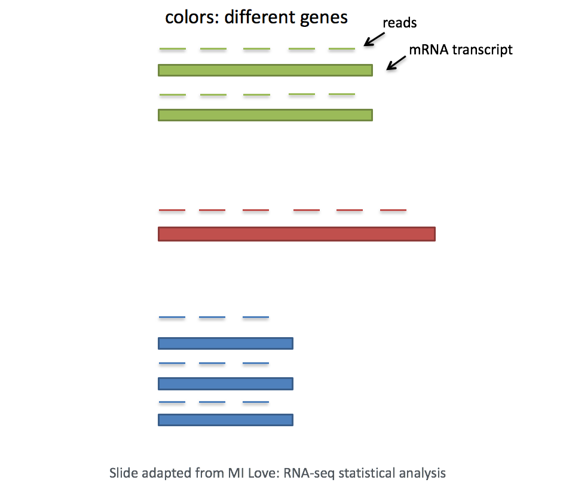
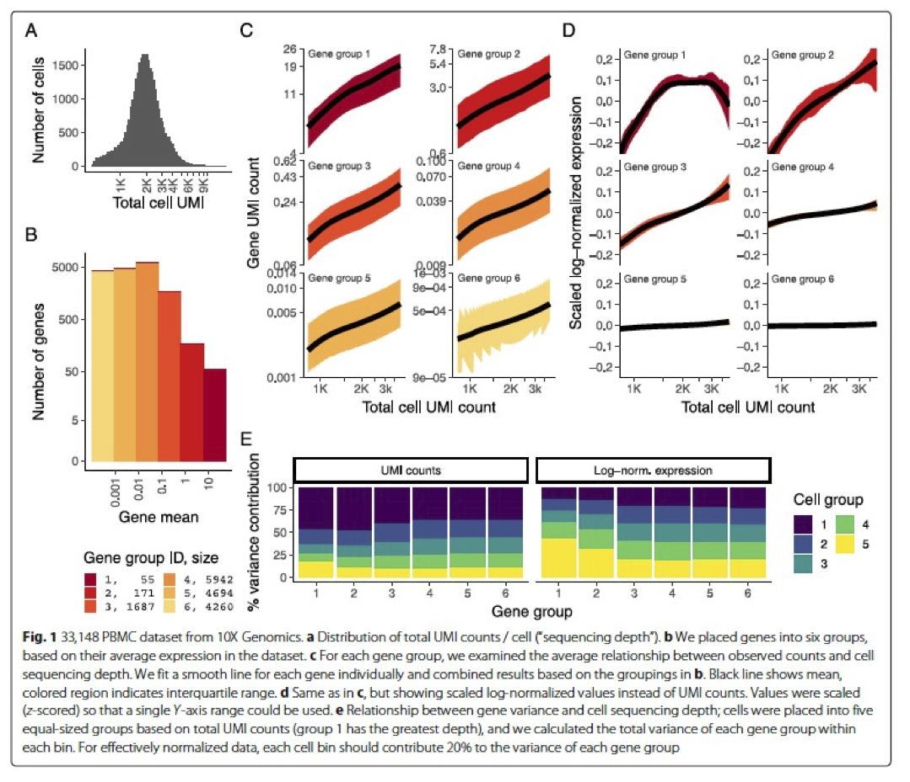
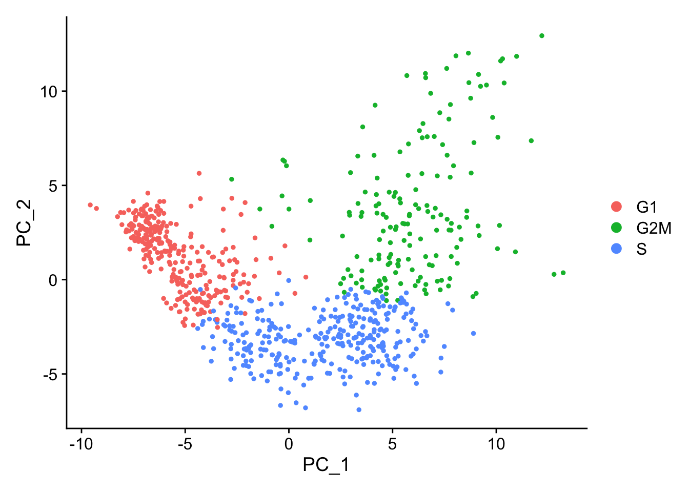
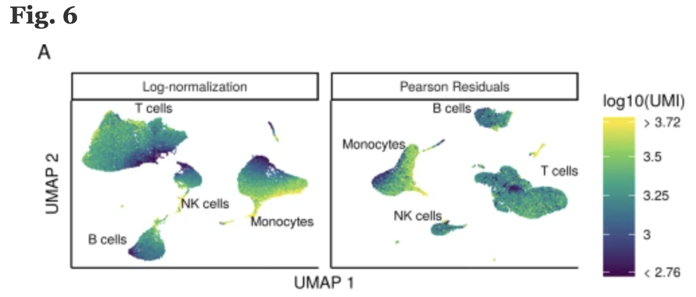

21Normalization and regressing out unwanted variation
Learning Objectives:
Discuss why normalizing counts is necessary for accurate comparison between cells
Describe different normalization approaches
Evaluate the effects from any unwanted sources of variation and correct for them
Now that we have our high quality cells, we can explore our data and see if we are able to identify any sources of unwanted variation. Depending on what we observe, we will utilize that information when performing variance stabilization using SCTransform but also to regress out the effects of any covariates that have an effect on our data.
Goals:
To accurately normalize the gene expression values to account for differences in sequencing depth and overdispersed count values.
To identify the most variant genes likely to be indicative of the different cell types present.
Challenges:
Checking and removing unwanted variation so that we do not have cells clustering by artifacts downstream
Recommendations:
Have a good idea of your expectations for the cell types to be present prior to performing the clustering. Know whether you expect cell types of low complexity or higher mitochondrial content AND whether the cells are differentiating
Regress out number of UMIs (default using SCTransform), mitochondrial content, and cell cycle, if needed and appropriate for experiment, so not to drive clustering downstream
21.1 标准化（Normalization）的原理和类型
An essential first step in the majority of mRNA expression analyses is normalization, whereby systematic variations are adjusted for to make expression counts comparable across genes and/or samples. The counts of mapped reads for each gene is proportional to the expression of RNA (“interesting”) in addition to many other factors (“uninteresting”). Normalization is the process of adjusting raw count values to account for the “uninteresting” factors.
The main factors often considered during normalization are:
Sequencing depth: Accounting for sequencing depth is necessary for comparison of gene expression between cells. In the example below, each gene appears to have doubled in expression in cell 2, however this is a consequence of cell 2 having twice the sequencing depth.
Each cell in scRNA-seq will have a differing number of reads associated with it. So to accurately compare expression between cells, it is necessary to normalize for sequencing depth.
Gene length: Accounting for gene length is necessary for comparing expression between different genes within the same cell. The number of reads mapped to a longer gene can appear to have equal count/expression as a shorter gene that is more highly expressed.

Note
If using a 3’ or 5’ droplet-based method (10X Genomics, CEL-seq2, Drop-seq, inDrops), the length of the gene will not affect the analysis because only the 5’ or 3’ end of the transcript is sequenced. However, if using full-length sequencing (Smart-seq), the transcript length should be accounted for.
Methods for scRNA-seq normalization
Various methods have been developed specifically for scRNA-seq normalization. Some simpler methods resemble what we have seen with bulk RNA-seq; the application of global scale factors adjusting for a count-depth relationship that is assumed common across all genes. However, if those assumptions are not true then this basic normalization can lead to over-correction for lowly and moderately expressed genes and, in some cases, under-normalization of highly expressed genes (Bacher et al. 2017). More complex methods will apply correction on a per-gene basis. In this lesson we will explore both approaches.
Regardless of which method is used for normalization, it can be helpful to think of it as a two-step process (even though it is often described as a single step in most papers). The first is a scaling step and the second is a transformation.
1. Scaling
The first step in normalization is to multiply each UMI count by a cell specific factor to get all cells to have the same UMI counts. Why would we want to do this? Different cells have different amounts of mRNA; this could be due to differences between cell types or variation within the same cell type depending on how well the chemistry worked in one drop versus another. In either case, we are not interested in comparing these absolute counts between cells. Instead we are interested in comparing concentrations, and scaling helps achieve this.
2. Transformation
The next step is a transformation, and it is at this step where we can distinguish the simpler versus complex methods as mentioned above.
Simple transformations are those which apply the same function to each individual measurement. Common examples include a log transform (which is applied in the original Seurat workflow), or a square root transform (less commonly used).
In the Hafemeister and Satija, 2019 paper the authors explored the issues with simple transformations. Specifically they evaluated the standard log normalization approach and found that genes with different abundances are affected differently and that effective normalization (using the log transform) is only observed with low/medium abundance genes (Figure 1D, below). Additionally, substantial imbalances in variance were observed with the log-normalized data (Figure 1E, below). In particular, cells with low total UMI counts exhibited disproportionately higher variance for high-abundance genes, dampening the variance contribution from other gene abundances.

Image credit: Hafemeister C and Satija R. Normalization and variance stabilization of single-cell RNA-seq data using regularized negative binomial regression, Genom Biology 2019 (https://doi.org/10.1186/s13059-019-1874-1)
The conclusion is, we cannot treat all genes the same.
The proposed solution was the use of Pearson residuals for transformation, as implemented in Seurat’s SCTransform function. With this approach:
Measurements are multiplied by a gene-specific weight
Each gene is weighted based on how much evidence there is that it is non-uniformly expressed across cells. More evidence == more of a weight
Genes that are expressed in only a small fraction of cells will be favored (useful for finding rare cell populations)
Not just a consideration of the expression level is, but also the distribution of expression
In this workshop we will demonstrate the use of both transformations at different steps in the workflow.
21.2 基于传统标准化流程对非期望变异来源进行评估
The most common biological data correction (or source of “uninteresting” variation) in single cell RNA-seq is the effects of the cell cycle on the transcriptome. We need to explore the data and see if we observe any effects in our data.
Set-up
Before we make any comparisons across cells, we will apply a simple normalization.This is solely for the purpose of exploring the sources of variation in our data.
The input for this analysis is a seurat object. We will use the one that we created in Chapter 18 called filtered_seurat.
An object of class Seurat
14065 features across 29629 samples within 1 assay
Active assay: RNA (14065 features, 0 variable features)
1 layer present: counts
# Normalize the countsseurat_phase<-NormalizeData(filtered_seurat)seurat_phase
An object of class Seurat
14065 features across 29629 samples within 1 assay
Active assay: RNA (14065 features, 0 variable features)
2 layers present: counts, data
可以发现，运行NormalizeDataNext后的数据多出了新的layer：data, 里面即储存了标准化后的数据。Next, we take this normalized data and check to see if data correction methods are necessary.
评估细胞周期的影响（Evaluating effects of cell cycle）
计算细胞周期评分
To assign each cell a score based on its expression of G2/M and S phase markers, we can use the Seuart function CellCycleScoring(). This function calculates cell cycle phase scores based on canonical markers that required as input.
A list of cell cycle markers, from Tirosh et al, 2015, is loaded with Seurat. We can segregate this list into markers of G2/M phase and markers of S phase. However, if you are not working with human data we have additional materials detailing how to acquire cell cycle markers for other organisms of interest.
After scoring the cells for cell cycle, we would like to determine whether cell cycle is a major source of variation in our dataset using PCA（PCA的原理详见：Chapter 20）.
To perform PCA, we need to first choose the most variable features, then scale the data. Since highly expressed genes exhibit the highest amount of variation and we don’t want our ‘highly variable genes’ only to reflect high expression, we need to scale the data to scale variation with expression level. The Seurat ScaleData() function will scale the data by:
adjusting the expression of each gene to give a mean expression across cells to be 0
scaling expression of each gene to give a variance across cells to be 1
# Identify the most variable genesseurat_phase<-FindVariableFeatures(seurat_phase, selection.method ="vst", # 默认值 nfeatures =2000)# 默认值# Scale the countsseurat_phase<-ScaleData(seurat_phase)Layers(seurat_phase)
[1] "counts" "data" "scale.data"
可以发现，运行ScaleData后的数据多出了新的layer：scale.data, 里面即储存了归一化后的数据。Now, we can perform the PCA analysis and plot the first two principal components against each other. We also split the figure by cell cycle phase, to evaluate similarities and/or differences.
We do not see large differences due to cell cycle phase. Based on this plot, we would not regress out the variation due to cell cycle.
When should cell cycle phase be regressed out?
Below are two PCA plots taken from Chapter 13 。This first plot is similar to what we plotted above, it is a PCA prior to regression to evaluate if the cell cycle is playing a big role in driving PC1 and PC2. Clearly, the cells are separating by cell type in this case, so it suggests regressing out these effects.

This second PCA plot is post-regression, and displays how effective the regression was in removing the effect we observed.
Mitochondrial expression is another factor which can greatly influence clustering. Oftentimes, it is useful to regress out variation due to mitochondrial expression. However, if the differences in mitochondrial gene expression represent a biological phenomenon that may help to distinguish cell clusters, then we advise not regressing this out. In this exercise, we can perform a quick check similar to looking at cell cycle and decide whether or not we want to regress it out.
First, turn the mitochondrial ratio variable into a new categorical variable based on quartiles. 根据各细胞线粒体基因的比例的四分位数将所有细胞分为低线粒体基因比例细胞、中线粒体基因比例细胞···
We do not see large differences due to mitochondrial expression. Based on this plot, we would not regress out the variation due to mitochondrial expression.
21.3SCTransform-based Normalization and regressing out sources of unwanted variation
Now that we have established which effects are observed in our data, we can use the SCTransform method to regress out these effects. The SCTransform method was proposed as a better alternative to the log transform normalization method that we used for exploring sources of unwanted variation. The method not only normalizes data, but it also performs a variance stabilization and allows for additional covariates to be regressed out.
As described earlier, all genes cannot be treated the same. As such, the SCTransformmethod constructs a generalized linear model (GLM) for each gene with UMI counts as the response and sequencing depth as the explanatory variable. Information is pooled across genes with similar abundances, to regularize parameter estimates and obtain residuals which represent effectively normalized data values which are no longer correlated with sequencing depth.

Image credit: Hafemeister C and Satija R. Normalization and variance stabilization of single-cell RNA-seq data using regularized negative binomial regression, Genom Biology 2019 (https://doi.org/10.1101/576827)_
Note
Since the UMI counts are part of the GLM, the effects are automatically regressed out. The user can include any additional covariates (vars.to.regress) that may have an effect on expression and will be included in the model.
An object of class Seurat
14065 features across 29629 samples within 1 assay
Active assay: RNA (14065 features, 0 variable features)
1 layer present: counts
An object of class Seurat
28130 features across 29629 samples within 2 assays
Active assay: SCT (14065 features, 3000 variable features)
3 layers present: counts, data, scale.data
1 other assay present: RNA
# Check which assays are stored in objectsseurat_phase@assays
$RNA
Assay (v5) data with 14065 features for 29629 cells
First 10 features:
AL627309.1, AL669831.5, LINC00115, FAM41C, NOC2L, KLHL17, PLEKHN1,
HES4, ISG15, AGRN
Layers:
counts
$SCT
SCTAssay data with 14065 features for 29629 cells, and 1 SCTModel(s)
Top 10 variable features:
CCL8, IGKC, CXCL10, FTL, CCL2, CCL7, ISG15, GNLY, IGLC2, CCL4
Note, the last line of output specifies “Set default assay to SCT”. 表明运行SCTransform之后，会将默认的assay指定为SCTransform之后的数据。This specifies that moving forward we would like to use the data after SCT was implemented. We can view the different assays that we have stored in our seurat object.
Since we have two samples in our dataset (from two conditions), we want to keep them as separate layers and transform them as that is what is required for integration.
# Split RNA assay by condition to perform cell cycle scoring and SCT on all samplesseurat_phase[["RNA"]]<-split(seurat_phase[["RNA"]], f =seurat_phase$sample)# 按照meta.data中的“sample”列进行分割seurat_phase
An object of class Seurat
28130 features across 29629 samples within 2 assays
Active assay: SCT (14065 features, 3000 variable features)
3 layers present: counts, data, scale.data
1 other assay present: RNA
1 dimensional reduction calculated: pca
现在可以发现RNA assay的counts和data按照”seurat_phase$sample”（ctrl vs. stim）被分别分割成了2个layer：
Now we will run the SCTransform() on each sample, and regress out mitochondrial expression by specifying in the vars.to.regress argument of the SCTransform() function.
Tip
The output of SCTransform() can generate large R objects/variables in terms of memory. If we have a large dataset, then we might need to adjust the limit for allowable object sizes within R (Default is 500 1024 ^ 2 = 500 Mb*) using the following code:
By default, after normalizing, adjusting the variance, and regressing out uninteresting sources of variation, SCTransform will rank the genes by residual variance and output the 3000 most variant genes. If the dataset has larger cell numbers, then it may be beneficial to adjust this parameter higher using the variable.features.n argument.
Now we can see that in addition to the raw RNA counts, we now have a SCT component in our assays slot. The most variable features will be the only genes stored inside the SCT assay. As we move through the scRNA-seq analysis, we will choose the most appropriate assay to use for the different steps in the analysis.
Bacher, Rhonda, Li-Fang Chu, Ning Leng, Audrey P Gasch, James A Thomson, Ron M Stewart, Michael Newton, and Christina Kendziorski. 2017. “SCnorm: Robust Normalization of Single-Cell RNA-Seq Data.”Nature Methods 14 (6): 584–86. https://doi.org/10.1038/nmeth.4263.
Source Code
---bibliography: references.bib---# Normalization and regressing out unwanted variation {#sec-normalization-and-regressing-out-unwanted-variation}::: callout-note###### **Learning Objectives:**- Discuss why normalizing counts is necessary for accurate comparison between cells- Describe different normalization approaches- Evaluate the effects from any unwanted sources of variation and correct for them:::Now that we have our high quality cells, we can explore our data and see if we are able to identify any **sources of unwanted variation**. Depending on what we observe, we will utilize that information when performing variance stabilization using `SCTransform` but also to regress out the effects of any covariates that have an effect on our data.{width="545"}------------------------------------------------------------------------**Goals:**- To accurately **normalize the gene expression values** to account for differences in **sequencing depth** and overdispersed count values.- To **identify the most variant genes** likely to be indicative of the different cell types present.**Challenges:**- **Checking and removing unwanted variation** so that we do not have cells clustering by artifacts downstream**Recommendations:**- Have a good idea of your expectations for the **cell types to be present** prior to performing the clustering. Know whether you expect cell types of low complexity or higher mitochondrial content AND whether the cells are differentiating- **Regress out** number of **UMIs** (default using `SCTransform`), **mitochondrial content**, and **cell cycle**, if needed and appropriate for experiment, so not to drive clustering downstream------------------------------------------------------------------------## 标准化（Normalization）的原理和类型An essential first step in the majority of mRNA expression analyses is normalization, whereby systematic variations are adjusted for to **make expression counts comparable across genes and/or samples**. The counts of mapped reads for each gene is proportional to the expression of RNA ("interesting") in addition to many other factors ("uninteresting"). Normalization is the process of adjusting raw count values to account for the "uninteresting" factors.The main factors often considered during normalization are:- **Sequencing depth:** Accounting for sequencing depth is necessary for comparison of gene expression between cells. In the example below, each gene appears to have doubled in expression in cell 2, however this is a consequence of cell 2 having twice the sequencing depth.{width="509"}> Each cell in scRNA-seq will have a differing number of reads associated with it. So to accurately compare expression between cells, it is necessary to normalize for sequencing depth.- **Gene length:** Accounting for gene length is necessary for comparing expression between different genes within the same cell. The number of reads mapped to a longer gene can appear to have equal count/expression as a shorter gene that is more highly expressed.{width="464"}::: callout-noteIf using a **3' or 5' droplet-based method (10X Genomics, CEL-seq2, Drop-seq, inDrops)**, the length of the gene will **not** affect the analysis because only the 5' or 3' end of the transcript is sequenced. However, if using **full-length sequencing (Smart-seq)**, the transcript length should be accounted for.:::### Methods for scRNA-seq normalizationVarious methods have been developed specifically for scRNA-seq normalization. Some simpler methods resemble what we have seen with bulk RNA-seq; the application of **global scale factors** adjusting for a count-depth relationship that is assumed common across all genes. However, if those assumptions are not true then this basic normalization can lead to over-correction for lowly and moderately expressed genes and, in some cases, under-normalization of highly expressed genes [@bacher2017]. More complex methods will apply correction on a per-gene basis**.** In this lesson we will explore both approaches.Regardless of which method is used for normalization, it can be helpful to think of it as a **two-step process** (even though it is often described as a single step in most papers). The first is a scaling step and the second is a transformation.**1. Scaling**The first step in normalization is to **multiply each UMI count by a [cell specific factor]{.underline} to get [all cells to have the same UMI counts]{.underline}**. Why would we want to do this? Different cells have different amounts of mRNA; this could be due to differences between cell types or variation within the same cell type depending on how well the chemistry worked in one drop versus another. In either case, we are not interested in comparing these **absolute counts** between cells. Instead we are interested in comparing **concentrations**, and scaling helps achieve this.**2. Transformation**The next step is a transformation, and it is at this step where we can distinguish the simpler versus complex methods as mentioned above.**Simple transformations** are those which apply the same function to each individual measurement. Common examples include a **log transform** (which is applied in the original Seurat workflow), or a square root transform (less commonly used).In the [Hafemeister and Satija, 2019 paper](https://genomebiology.biomedcentral.com/articles/10.1186/s13059-019-1874-1) the authors explored the issues with simple transformations. Specifically they evaluated the standard log normalization approach and found that genes with different abundances are affected differently and that effective normalization (using the log transform) is only observed with low/medium abundance genes (Figure 1D, below). Additionally, substantial imbalances in variance were observed with the log-normalized data (Figure 1E, below). In particular, cells with low total UMI counts exhibited disproportionately higher variance for high-abundance genes, dampening the variance contribution from other gene abundances. > Image credit: Hafemeister C and Satija R. Normalization and variance stabilization of single-cell RNA-seq data using regularized negative binomial regression, Genom Biology 2019 (<https://doi.org/10.1186/s13059-019-1874-1>)The conclusion is, **we cannot treat all genes the same.**The proposed solution was the use of **Pearson residuals for transformation**, as implemented in Seurat's `SCTransform` function. With this approach:- Measurements are multiplied by a **gene-specific weight**- Each gene is weighted based on how much evidence there is that it is non-uniformly expressed across cells. More evidence == more of a weight- Genes that are expressed in only a small fraction of cells will be favored (useful for finding rare cell populations)- Not just a consideration of the expression level is, but also the distribution of expressionIn this workshop we will demonstrate the use of both transformations at different steps in the workflow.## 基于传统标准化流程对非期望变异来源进行评估The most common biological data correction (or source of "uninteresting" variation) in single cell RNA-seq is the effects of the **cell cycle** on the transcriptome. We need to explore the data and see if we observe any effects in our data.### Set-upBefore we make any comparisons across cells, we will apply a **simple normalization.** **This is solely for the purpose of exploring the sources of variation in our data.**The input for this analysis is a `seurat` object. We will use the one that we created in @sec-qc called `filtered_seurat`.```{r}library(Seurat)filtered_seurat <-readRDS("output/scRNA-seq_online/seurat_filtered.rds")filtered_seurathead(filtered_seurat@meta.data)# Normalize the countsseurat_phase <-NormalizeData(filtered_seurat)seurat_phase```可以发现，运行`NormalizeDataNext`后的数据多出了新的layer：data, 里面即储存了标准化后的数据。Next, we take this normalized data and check to see if data correction methods are necessary.### 评估细胞周期的影响（Evaluating effects of cell cycle） {#sec-evaluating_effects_of_cell_cycle}#### 计算细胞周期评分To assign each cell a score based on its expression of G2/M and S phase markers, we can use the Seuart function `CellCycleScoring()`. This function calculates cell cycle phase scores based on canonical markers that required as input.A list of cell cycle markers, from Tirosh et al, 2015, is loaded with Seurat. We can segregate this list into markers of G2/M phase and markers of S phase. However, if you are not working with human data we have [additional materials](https://hbctraining.github.io/scRNA-seq_online/lessons/cell_cycle_scoring.html) detailing how to acquire cell cycle markers for other organisms of interest.```{r}# Load cell cycle markerss.genes <- cc.genes$s.genesg2m.genes <- cc.genes$g2m.genes# Score cells for cell cycleseurat_phase <-CellCycleScoring(seurat_phase, g2m.features = g2m.genes, s.features = s.genes)# 现在的meta.data中多出了细胞周期评分“S.Score”和“G2M.Score”，以及推断的细胞所处的周期“Phase”head(seurat_phase@meta.data)# 查看一下细胞周期的分布情况table(seurat_phase$Phase)```#### 使用PCA确定细胞周期是否是我们数据集中的主要变异来源After scoring the cells for cell cycle, we would like to determine **whether cell cycle is a major source of variation in our dataset using PCA（PCA的原理详见：** @sec-pca_theory **）**.To perform PCA, we need to **first choose the most variable features, then scale the data**. Since highly expressed genes exhibit the highest amount of variation and we don't want our 'highly variable genes' only to reflect high expression, we need to scale the data to scale variation with expression level. The Seurat `ScaleData()` function will scale the data by:- adjusting the expression of each gene **to give a mean expression across cells to be 0**- scaling expression of each gene **to give a variance across cells to be 1**```{r}# Identify the most variable genesseurat_phase <-FindVariableFeatures(seurat_phase, selection.method ="vst", # 默认值nfeatures =2000) # 默认值# Scale the countsseurat_phase <-ScaleData(seurat_phase)Layers(seurat_phase)```可以发现，运行`ScaleData`后的数据多出了新的layer：scale.data, 里面即储存了归一化后的数据。Now, we can perform the PCA analysis and plot the first two principal components against each other. We also split the figure by cell cycle phase, to evaluate similarities and/or differences.```{r}#| fig-width: 10# Perform PCA。如果没有指定features，RunPCA默认使用FindVariableFeatures找到的高变基因作为PCA输入.seurat_phase <-RunPCA(seurat_phase)# Plot the PCA colored by cell cycle phasep1 <-DimPlot(seurat_phase,reduction ="pca",group.by="Phase")p2 <-DimPlot(seurat_phase,reduction ="pca",group.by="Phase",split.by ="Phase")library(cowplot)plot_grid(p1, p2, ncol =2, labels ="AUTO")```**We do not see large differences due to cell cycle phase. Based on this plot, we would not regress out the variation due to cell cycle.**::: {.callout-tip collapse="true"}###### When should cell cycle phase be regressed out?Below are two PCA plots taken from @sec-Elimination_of_cell_cycle_effects 。This first plot is similar to what we plotted above, it is a PCA prior to regression to evaluate if the cell cycle is playing a big role in driving PC1 and PC2. Clearly, the cells are separating by cell type in this case, so it suggests regressing out these effects.{width="427"}This second PCA plot is post-regression, and displays how effective the regression was in removing the effect we observed.{width="430"}:::::: callout-tip在需要消除细胞周期的影响时，如何通过`ScaleData`回归掉（regress out）细胞周期的影响，以及如何在消除细胞周期的影响同时保留增殖细胞与静止细胞的区分，参考 @sec-Elimination_of_cell_cycle_effects 。:::------------------------------------------------------------------------### 评估线粒体基因表达的影响Mitochondrial expression is another factor which can greatly influence clustering. Oftentimes, it is useful to regress out variation due to mitochondrial expression. However, **if the differences in mitochondrial gene expression represent a biological phenomenon that may help to distinguish cell clusters, then we advise not regressing this out**. In this exercise, we can perform a quick check similar to looking at cell cycle and decide whether or not we want to regress it out.1. First, turn the mitochondrial ratio variable into a new categorical variable based on quartiles. 根据各细胞线粒体基因的比例的四分位数将所有细胞分为低线粒体基因比例细胞、中线粒体基因比例细胞···```{r}# Check quartile valuessummary(seurat_phase$mitoRatio)# Turn mitoRatio into categorical factor vector based on quartile values seurat_phase$mitoFr <-cut(seurat_phase@meta.data$mitoRatio, breaks=c(-Inf, 0.0144, 0.0199, 0.0267, Inf), labels=c("Low", "Medium", "Medium high", "High"))table(seurat_phase$mitoFr)```2. Next, plot the PCA similar to how we did with cell cycle regression. *Hint: use the new `mitoFr` variable to split cells and color them accordingly.*```{r}#| fig-width: 20# 根据各细胞线粒体基因的比例信息绘制PCA p1 <-DimPlot(seurat_phase,reduction ="pca",group.by="mitoFr") p2 <-DimPlot(seurat_phase,reduction ="pca",group.by="mitoFr",split.by ="mitoFr")plot_grid(p1, p2, ncol =2, labels ="AUTO")```3. Evaluate the PCA plot. We do not see large differences due to mitochondrial expression. Based on this plot, we would not regress out the variation due to mitochondrial expression.------------------------------------------------------------------------## `SCTransform`-based Normalization and regressing out sources of unwanted variationNow that we have established which effects are observed in our data, we can use the `SCTransform` method to regress out these effects. The `SCTransform` method was proposed as a better alternative to the log transform normalization method that we used for exploring sources of unwanted variation. The method not only **normalizes data, but it also performs a variance stabilization and allows for additional covariates to be regressed out**.As described earlier, all genes cannot be treated the same. As such, the `SCTransform` **method constructs a generalized linear model (GLM) for each gene** with UMI counts as the response and sequencing depth as the explanatory variable. Information is pooled across genes with similar abundances, to regularize parameter estimates and **obtain residuals which represent effectively normalized data values** which are no longer correlated with sequencing depth.{width="532"}> Image credit: Hafemeister C and Satija R. Normalization and variance stabilization of single-cell RNA-seq data using regularized negative binomial regression, Genom Biology 2019 (<https://doi.org/10.1101/576827)_>::: callout-noteSince the UMI counts are part of the GLM, the effects are automatically regressed out. The user can include any additional covariates (`vars.to.regress`) that may have an effect on expression and will be included in the model.:::### 数据导入前面的流程和此前一样```{r}rm(list =ls())library(Seurat)filtered_seurat <-readRDS("output/seurat_filtered.rds")filtered_seurathead(filtered_seurat@meta.data)```### 执行`SCTransform`- 这里先运行一次`SCTransform`以便后面评估细胞周期、线粒体基因等非期望变异来源（**This is solely for the purpose of exploring the sources of variation in our data**）- `SCTransform`替代了传统单细胞数据分析流程中的`NormalizeData()`、`ScaleData()`和`FindVariableFeatures()`函数的功能，因此不再需要运行这些函数。- In Seurat v5, SCT v2 is applied by default. You can revert to v1 by setting `vst.flavor = 'v1'`。- `SCTransform`的运算调用了[`glmGamPoi`](https://bioconductor.org/packages/release/bioc/html/glmGamPoi.html)包以显著提升运算速度。所以事先需要通过`BiocManager`安装该包。```{r}# SCTranform# BiocManager::install("glmGamPoi")seurat_phase <-SCTransform(filtered_seurat)seurat_phase# Check which assays are stored in objectsseurat_phase@assays# 查看目前默认的assayDefaultAssay(seurat_phase)# 查看默认assay的layersLayers(seurat_phase)```Note, the last line of output specifies **"Set default assay to SCT"**. 表明运行`SCTransform`之后，会将默认的assay指定为`SCTransform`之后的数据。This specifies that moving forward we would like to use the data after SCT was implemented. We can view the different assays that we have stored in our seurat object.### 评估细胞周期的影响```{r}#| fig-width: 10# Load cell cycle markerss.genes <- cc.genes$s.genesg2m.genes <- cc.genes$g2m.genes# Score cells for cell cycleseurat_phase <-CellCycleScoring(seurat_phase, g2m.features = g2m.genes, s.features = s.genes)# 现在的meta.data中多出了细胞周期评分“S.Score”和“G2M.Score”，以及推断的细胞所处的周期“Phase”head(seurat_phase@meta.data)# 查看一下细胞周期的分布情况table(seurat_phase$Phase)# 执行PCAseurat_phase <-RunPCA(seurat_phase)# Plot the PCA colored by cell cycle phasep1 <-DimPlot(seurat_phase,reduction ="pca",group.by="Phase")p2 <-DimPlot(seurat_phase,reduction ="pca",group.by="Phase",split.by ="Phase")library(cowplot)plot_grid(p1, p2, ncol =2, labels ="AUTO")```### 评估线粒体基因的影响```{r}#| fig-width: 20# Check quartile valuessummary(seurat_phase$mitoRatio)# Turn mitoRatio into categorical factor vector based on quartile valuesseurat_phase$mitoFr <-cut(seurat_phase@meta.data$mitoRatio, breaks=c(-Inf, 0.0144, 0.0199, 0.0267, Inf), labels=c("Low", "Medium", "Medium high", "High"))table(seurat_phase$mitoFr)# Plot the PCA colored by cell cycle phasep1 <-DimPlot(seurat_phase,reduction ="pca",group.by="mitoFr")p2 <-DimPlot(seurat_phase,reduction ="pca",group.by="mitoFr",split.by ="mitoFr")plot_grid(p1, p2, ncol =2, labels ="AUTO")```### 分割layer，再次执行`SCTranform`Since we have two samples in our dataset (from two conditions), we want to keep them as separate layers and transform them as that is **what is required for integration**.```{r}# Split RNA assay by condition to perform cell cycle scoring and SCT on all samplesseurat_phase[["RNA"]] <-split(seurat_phase[["RNA"]], f = seurat_phase$sample) # 按照meta.data中的“sample”列进行分割seurat_phase```现在可以发现RNA assay的`counts`和`data`按照"seurat_phase\$sample"（ctrl vs. stim）被分别分割成了2个layer：Now we will run the `SCTransform()` on each sample, and regress out mitochondrial expression by specifying in the `vars.to.regress` argument of the `SCTransform()` function.::: callout-tipThe output of `SCTransform()` can generate large R objects/variables in terms of memory. If we have a large dataset, then we might need to **adjust the limit for allowable object sizes within R** (*Default is 500* 1024 \^ 2 = 500 Mb\*) using the following code:```{r}#| eval: false#| echo: fencedoptions(future.globals.maxSize =4000*1024^2)```:::#### 执行`SCTranform` {#sec-perform_sctranform}```{r}# SCTranformseurat_phase <-SCTransform(seurat_phase, vars.to.regress =c("mitoRatio"))```By default, after normalizing, adjusting the variance, and regressing out uninteresting sources of variation, `SCTransform` will rank the genes by residual variance and output the **3000** most variant genes. If the dataset has larger cell numbers, then it may be beneficial to adjust this parameter higher using the `variable.features.n` argument.Now we can see that in addition to the raw RNA counts, we now have a SCT component in our `assays` slot. The most variable features will be the only genes stored inside the SCT assay. As we move through the scRNA-seq analysis, we will choose the most appropriate assay to use for the different steps in the analysis.------------------------------------------------------------------------### Save the object!```{r}saveRDS(seurat_phase, "output/scRNA-seq_online/split_seurat.rds")```------------------------------------------------------------------------::: {.callout-note collapse="true" icon="false"}## Session Info```{r}#| echo: falsesessionInfo()```:::